Avatar
User photo, initials, or icon

Badge
Status indicator and label
Button
Primary actions and CTAs
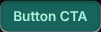
Button Group
Segmented control for mutually exclusive options
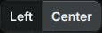
Checkbox
The bare checkbox control, compose with label and helper via Toggles

Color Picker
Swatch trigger that opens a palette panel with hex input for colour selection
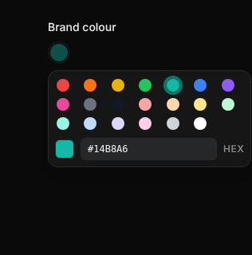
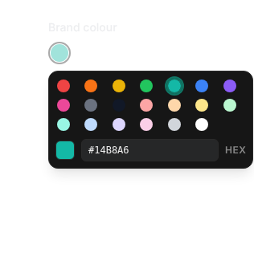
Divider
Horizontal separator with optional centered content
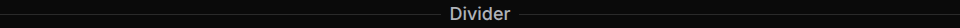
Helper
Standalone helper text, use in forms, cards, sections, anywhere
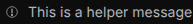
Icon
A glyph drawn from an icon the app provides, in the current content color
Link
Interactive text element with icon support, font inheritance, and external indicator

Metrics
Stat cards with trend indicators
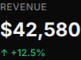
Progress
Determinate progress indicator

Radio
The bare radio button control, compose with label and helper via Toggles
Rating
Star rating for displaying scores or collecting user input with half-star support

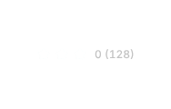
Search Input
Input with leading search icon and trailing clear button
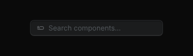
Segmented
Mutually exclusive option group for compact view or mode switching
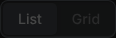
Skeleton
Loading placeholder shapes
Spinner
Indeterminate loading indicator

Step Indicator
Minimal dots, bars, or number indicators showing position in a multi-step flow
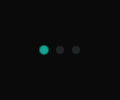
Tabs
Content section switcher
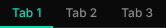
Switch
The bare switch/toggle control, compose with label and helper via Toggles
Toggles
Checkbox, radio & switch, combined pattern with label and helper
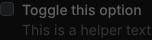
Tooltip
Contextual popup on hover